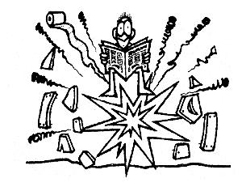
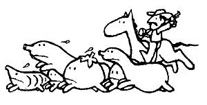

Sometimes a particular "horse sense" solution in this column prompts readers to send in their own-and often better-ways of dealing with the same problem. For instance, Jim Whiffed recently matched Tom Butler's technique for leveling the legs of unevenly balanced chairs (which was published in MOTHER NO. 62) with a fix-it method that should be just dandy whenever one of the seat's supports is longer than the other three. Jim simply sets the faulty chair on a table top . . . In such a way that the three equal-length legs rest on the flat surface while the extra-long "limb" hangs over the table's edge. Then the Tacoma, Washington wood worker marks that odd brace where it meets the flat top, saws the leg flush, and thereby levels his chair.
Another recently received "I've got a better idea" letter contained Homer Bloomfield's solution to the problem of unrolling barbed wire by yourself (Homer was responding to Bob Whit suggestion in MOTHER NO. 62). The Garrison, Kentucky native makes an easy-to-handle wire spool steerer out of an 18"length of threaded axle, a 15" piece of 112", 314", or 1" pipe, some axle-fitting nuts and washers, and an old lawnmower handle. Mr. Bloomfield simply fits the smaller rod inside the pipe section . . . pokes both pieces through the spool of barbed wire... and bolts the axle's ends onto the bottom of the lawnmower handle. The resulting rollable rig works so well that it enabled Homer's dad single handedly-to unwind the prickly fence wire around 80 acres of heavy forest and brush!
And, every once in a while, a reader will write in to point out that a "horse sense" solution we ran in this column could, in fact, be downright dangerous! More than one person warned us that E.D. Church's suggestion (run in MOTHER NO. 81) that folks warm a cold outhouse by stuffing a burning sheet of newspaper down the building's "porthole" was-due to a possible accumulation of methane gas-likely to cause an explosion! Most such writers preferred taking a homemade Styrofoam toilet seat out with them when they need to visit the line house in chilly weather.
Most recently, a number of folks wrote in to say that one of the DOWN-HOME NAIL LORE entries we ran last issue could be hazardous. As Iowa City, Iowa's Pat Burke put it, "You should never `set' the claw of a hammer into a headless nail that needs pulling by banging the face of that tool with another hammer. A glancing blow can ail too easily cause a chip of steel to fly off one hammer and into a person's eye! Instead, either push the hammer head onto the nail with your hand-and then pull the tool's handle down sideways-or grab the end of a headless fastenor with Vise Grips . . . and use that implement's `bulldog tight' hold to pry the nail out."
Do you want to save on rabbit feed and cut down your lawn-clipping chores? Then try the suggestion of Rainelle West Virginia homesteader Wayne Fugate, and raise your weaned bunnies in portable bottomless pens! Move the cages to different sections of the lawn each day, and let the furry critters nibble away to their hearts' content. (You will, though, still need to provide the mammals with plenty of water, a small amount of supplemental feed, and-it you live in fox or weasel country-a sate, elevated shelter at night.)
You say you've got varmints in your vegetable patch? Well, here are a few reader-tested techniques to make sure you get to harvest your luscious fresh crops yourself:
[1] Rod Barker drives moles away by stuffing human hair clippings-which the Mill City, Oregonian gets free for the asking at his local barbershop-into the openings of the critters' runs ... while Fair Oaks, California's Lynn Pribys uses dog hair-in the same manner-to chase away gophers!
[2]Two readers employ products of the highly toxic castor bean to "git shat" of their tunneling varmints. Mrs. Ralph Maddux--of Elkhart, Indiana-pours a dilute solution of two tablespoons of castor oil per gallon of water down the animals' runs . . . but Tucson, Arizona's Tina Parks grows the bean plant itself in areas where the rodents pose a problem.
[3] Leonard and Joyce Christmas, on the other hand, have shared one of the least harmful (and most unusual) methods for keeping rabbits from their veggies. The Whitehouse, Texas couple fill glass gallon jars with water and place those containers near the bunnies' favorite nibblings The invading rabbits are so frightened by seeing the movement of their own reflections that they chase themselves right out of the garden!
One way to make a more versatile tool out of an ordinary garden hoe (according to Joel Russ of New Denver, British Columbia) is to slice across the top corners of the instrument's face, with a hacksaw, giving the tool's blade a triangular-rather than rectangular-shape ... while retaining its long bottom edge. The newly formed lower-corner points that result are especially effective for making seed furrows and weeding close to crop roots.
Debt Carr has come up with a nifty way for home-style ice cream makers (who can pick up some equipment tips and recipes in the article beginning on page 82) to save a bit of trouble and expense. Most folks, you see, search for a safe place to dump their used-and salt-laden -ice solution every time they finish churning . . . but this Spring Valley, California lass simply puts her used slush in plastic containers and refreezes it. The brine solution won't turn completely solid-and will need some stirring before you can use it again-but it sure will freeze that next batch of homemade "creamy"!
Does your kitchen have the infamous summertime fruit fly blues? If so, you might want to clear the air with the "Manitou Springs Bug Trap" developed by Coloradan Ginny Phelps. To make a replica of Ginny's improvised fruit fly catcher, construct a paper funnel that can be set into the top of a wide-mouthed glass jar (make the funnel's small opening about 1-112 to 2 inches across). Pour some old beer into the container and tape the "big end" of the funnel to the jar's rim. Then watch the suds-loving bugs divebomb their way to a blissful, dunkin' death.
A livestock salt block can dissolve pretty quickly if you leave its bottom resting flush an the soil . . . because ground moisture gets trapped under the cube. You might want to stand the block on an old tire rim, instead, as does Bend, Oregon's Chris Reiter. The holes in that used tire holder wilt provide drainage for the salt lick and greatly lengthen its usefulness.
Lots of readers have clever ideas for "corralling" the supplies of garden produce that seem to stampede into the kitchen around this time of year, and we're going to share a few of their best suggestions with you now.
[1]Did you ever wish you knew a good way to mark the storage date on your canning jars? Lynne Chubb says she finally realized thatsince the containers' lids are used only once-- could easily write on those flat surfaces with an ordinary crayon. And because the Arlington, Virginian dates each top while it's still hot, the waxy inscription melts onto the lids and stays there!
[2] Boiling down home-canned tomato sauce can take a lot of time and energy. But a clever Trotwood, Ohioan named Lili Pintea leis her prepared puree cool overnight in the refrigerator before she starts to cookin'. The tighter juice which rises to the top can then be easily poured off-to be used in soups-and the more concentrated fixin's in the bottom of the container will cook down to a thick sauce in jiffy time!
[3] Some folks use their washing machines to clean or blanch large quantities of vegetables, but David Koenigsberg of Roslyn, Pennsylvania has a timesaving technique for people who prefer to wash their leafy greens by hand. Instead of scrubbing each leaf separately under running water-which takes time and wastes valuable water-Dave simply stuffs his harvested fronds into a two-quart plastic container that has a tight-fitting lid, puts the top on . . . and shakes the whole thing. One or two treatments with this technique-followed by a gentle swishing of the leaves in a pan of water to allow any remaining coarse particles to settle out-produces a quickly cleaned batch of greens.
[4] Leslie, Arkansas's Patty Munson had a dickens of a time just trying to keep track of all her home-canned victuals, until she devised a simple record-keeping system. Patty's posted a sheet of graph paper, in her pantry, which has a different line marked off for each food. Every time she puts up a few jars of, say, green beans ... she marks. off a corresponding number of squares on the sheet's "bean" column. Laterwhen she pulls out a jar for eating-Ms. Munson "X's" out its previously marked square . . . and thereby keeps a running tally of both how much food she's used and how much she still has stored away!
[5] Many food preservers-one of whom is Judy Aurich of Salt Lake City, Utah-like to put up extra jars of jams and jellies to use as gifts during the holiday season. This Beehive Stator, though, has figured out a unique way to turn such presents into two gifts in one ... she paraffin seals all her "giveaway" batches of preserves in attractive drinking mugs!
OK. Now it's YOUR turn! We've all come up with some practical, down-home, time-tested solutions to the frustrating little problems that bug us every day. Let's hear YOUR best "horse sense" ideas so we can share'em and all benefit.
Send your pointers to Down-Home Country Lore, P.O. Box 70, Hendersonville, North Carolina 28791, and 1'11 make sure that the most useful of the suggestions will appear in upcoming editions. A one-year subscription-or a oneyear extension of an existing subscription-will then be sent to each contributor whose tip does get printed in this column.-MOTHER.
|
|
 |
 |